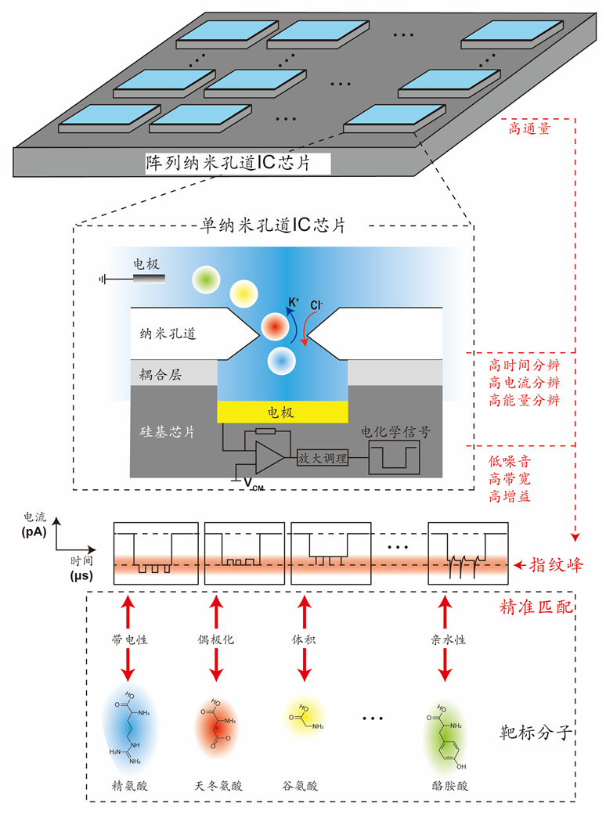
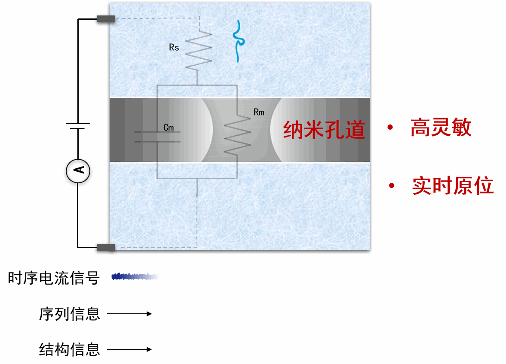
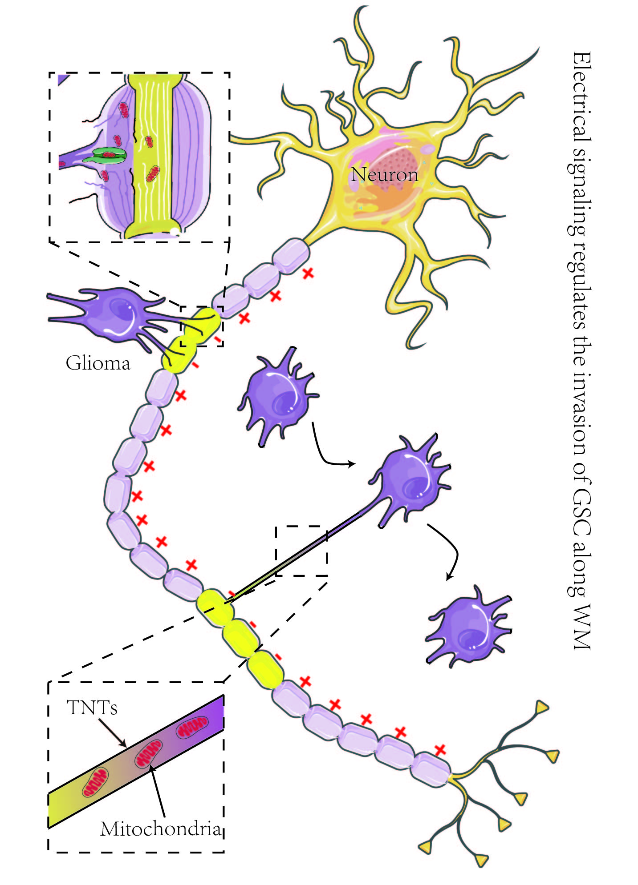
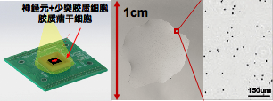
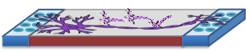

一、纳米孔道界面的高时空分辨测量方法与系统
从底端芯片设计出发，打破现有纳米孔检测仪器和系统对单分子检测灵敏度和时间分辨的制约，创新性地耦合纳米孔道和硅基芯片，发展新型高通量、高灵敏的“阵列纳米孔道IC芯片”，大大提高纳米孔道单分子蛋白质测量的时空分辨及测量通量，为蛋白质单分子测序及重要生物化学反应研究提供技术支撑。
本实验室自主研发的电流信号检测芯片，芯片具有如下特征：
1、对电流信号进行采集与检测
2、超低电流噪声，能对皮安级电流进行高信噪比的检测
基于该芯片构建的高时空分辨测量系统，可以对纳米孔道产生的皮安级电流信号进行采集、检测与实时显示


二、异质性胶质瘤干细胞光电一体化芯片
建立宽视场高分辨无透镜成像芯片结合非接触式细胞电位传感器的光电一体化探测系统，借助光刺激诱导神经元发放冲动的GSC沿白质神经纤维侵袭模型，体内外观测分析神经电信号传导对GSC各亚群沿白质神经纤维侵袭的影响和机制，进而评估治疗学意义。预期结果可望为更全面地理解胶质瘤沿白质神经纤维侵袭提供新的仪据，并为研发新型靶向GSC的抗侵袭治疗方法奠定基础。
本实验室自主研发的光电一体化芯片，芯片具有如下特征：
1、超低噪声，能对微伏级信号进行高信噪比的检测
2、良好的生物兼容性，能在芯片表面进行长时间的细胞培养
3、超高分辨率，能对细胞进行实时高清成像
基于该芯片构建的光电一体化检测系统，可同时对细胞进行实时电位检测、显示及实时成像
-

图1 百纳米级分辨率
 图2 高分辨成像芯片+神经电位检测芯片